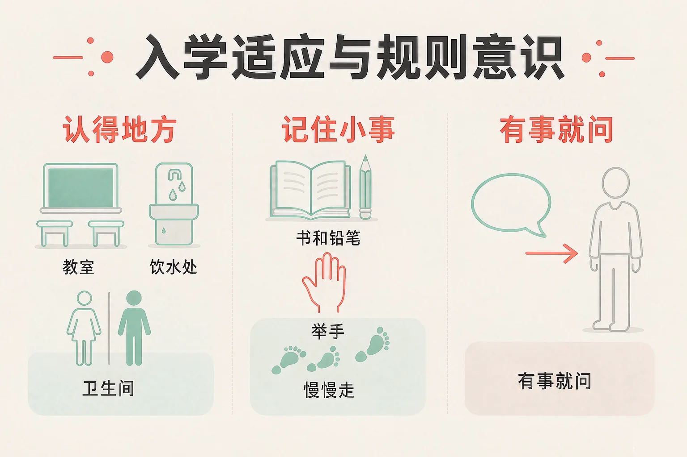
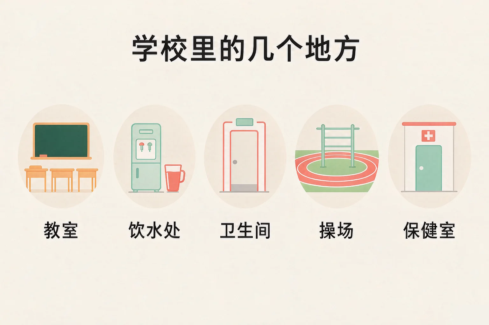
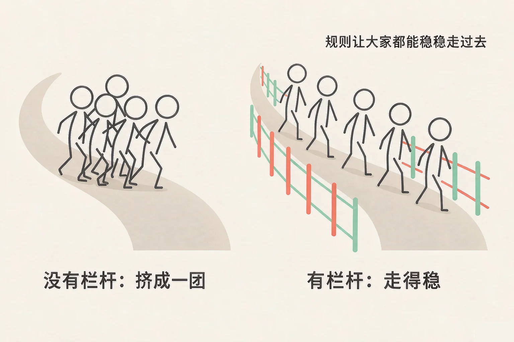

Gallery
v1.0.0 · skill v7.22.0
小学一年级 · 生活适应
第一天走进校门，心里有点紧张，该怎么办？

选一个你真正想知道的问题，后面的活动都会围着它转。
选择或输入后，这节课会围绕你的问题展开。
先凭直觉选一个，选完立刻看到解释——错了也没关系，正好知道要重点听哪里。
1. 上课的时候，我很想说话，怎么做比较合适？
举了手，老师就知道你有话要说，别的同学也还能听清老师讲话。错因提醒：常见错误是把「想说话」和「马上说出来」搞混了——先举手，是让大家都方便的做法。
2. 在学校里，我忽然找不到自己的教室了，怎么做比较好？
老师最熟悉学校，一听班号就能带你回去。错因提醒：有些小朋友误认为「自己找显得能干」，其实开口问一问，是又聪明又安全的做法。
3. 课间十分钟，哪一件事最好先做好？
课间先把身体的事情做好，上课才能安心。错因提醒：容易把课间当成「只有玩」的时间，结果一上课就着急——先把该做的做完，玩起来也更放心。
为什么要学这一课？
在幼儿园里，我们已经知道口渴了要喝水、想上厕所要说一声（And）；可是小学比幼儿园大得多，教室、操场、保健室都在不同的地方，第一天走进来，很容易不知道往哪走（But）；所以我们先来认一认这些地方，知道每个地方做什么用，心里就有底了（Therefore）。
学校就像一个大院子，里面有几个每天都会去的地方。认清楚它们，你在学校里就不会迷路。
教室里要用的
自己的座位、放书包的地方、黑板和讲台。上课、写字、听老师说话，都在这里。
课间要去的
饮水处接水，卫生间上厕所，操场课间活动——这三件事都在课间做好。

🔍 深层理解 换个角度再看一遍这件事，看看能不能说出背后的原理。
看见它：学校里每一个地方都有自己的名字和用处，就像家里有厨房、有卧室一样，各有各的事要做。
解释它：为什么认得路，心里就踏实？因为知道自己在哪里、接下来要去哪，不用一直猜来猜去，力气就省下来学东西了。
迁移它：换一个新地方也一样：先去认一认门在哪里、卫生间在哪里、找不到路的时候可以问谁。这个办法到哪里都能用。
先点一件你今天可能遇到的事，再从三个做法里选一个。选得好会告诉你为什么，选得不太合适也会告诉你还可以试试什么。
先点一件今天可能遇到的事。
规则不是用来管住谁的，它更像小路两旁的栏杆：有了它，大家走起来不挤，也不容易摔跤。

有的同学误认为「老师没看见，规则就可以不做」。其实这些小事的好处，先落在自己身上：书摆好了，自己一伸手就能拿到；走路慢慢走，摔跤的也不会是自己。
🔍 深层理解 换个角度再看一遍这件事，看看能不能说出背后的原理。
看见它：规则不在墙上，它就在每个人的动作里：把书摆好、举手、慢慢走，这些都是规则本来的样子。
比较它：一条没有栏杆的小路，看着自由，可人一多就挤；一条有栏杆的小路，走得稳，人人都能过去。
迁移它：在家里、过马路、坐公交车，也都有这样的规则。做法不一样，道理是同一个：让大家都方便、都安全。
先点一条做法，再点它应该进的筐。要做的放进上筐，先问一问的放进下筐。
我的规则小书
要做的
先问一问的
先在上面点一条做法。
情境：小豆第一天上小学，站在教室门口，不知道该做什么。请你帮他一步一步想清楚。
有的同学误认为「到了教室要马上做点什么，才不显得笨」。其实第一天完全可以先看一看、再慢慢来。小豆的四步里，最要紧的是第一步——不着急，先看清楚。
说给同桌听：小豆这四步里，哪一步你自己已经做到了？哪一步还想再练一练？
先凭直觉选一个，选完立刻看到解释——错了也没关系，正好知道要重点听哪里。
1. 下面哪句话说得对？
规则像小路两旁的栏杆，保护的是走在路上的每一个人。错因提醒：常见错误是误认为规则只是来限制自己的——它其实是让大家都方便的约定。
2. 上课前把书和铅笔盒摆好，最大的好处是：
做好准备，最先方便的是自己。错因提醒：不要把「把事做好」和「为了被夸」搞混——就算没人看见，书摆好了，你自己也少着急一次。
3. 心里有点紧张、有点想妈妈的时候，下面哪个做法更合适？
把感觉说出来，老师才知道怎么帮你。错因提醒：有人误认为「说出来是胆小」，其实能说出自己的感觉，是很勇敢、也很聪明的做法。
下面五件事被打乱了。请你按从早到晚的顺序，一步一步点出来。
我排出来的一天
还没有排出第一步。
请点出你认为的第一步。
排完之后，想一想：
这五步里，哪一步最容易被忘掉？忘掉以后会带来什么小麻烦？
再把它画出来：五个小方框，用箭头连起来，就成了你自己的「上学一天图」。
先凭直觉选一个，选完立刻看到解释——错了也没关系，正好知道要重点听哪里。
1. 下雨天，你的伞放在教室门口的桶里，放学时发现伞不见了，你会：
告诉老师最稳当，老师认识班里的每一位同学，找起来也快。错因提醒：不要把「着急」和「随便拿」搞混——再着急，也不能动别人的东西。
2. 校门口有个不认识的大人跟你说「我带你去找妈妈」，你会：
不认识的人要带你走，不可以答应，要马上回到老师身边。错因提醒：常见错误是误认为「看起来和善」就等于「可以信任」。认不认识，比凶不凶更重要。
3. 班上来了一位新同学，一个人坐在座位上，你会：
一句招呼，就能让人觉得自己是被欢迎的。错因提醒：别把「他没说话」当成「他不想交朋友」——先打个招呼，再看他怎么回应，这样更公平。
还要记牢一件事：刚上小学，有点紧张、有点想家，很多小朋友都会这样，你一点也不奇怪。慢慢地，学校会变成你熟悉的地方。
给别人讲一遍：请用「地方、规则、问一问」这三个词，说清楚你今天在学校做对的一件事。
再动一动手：画一画从校门到你的教室，路上会经过哪些地方，把它们标在纸上。
三层练习，做完第一、二层就算通关；第三层留给愿意继续探索的同学。
⭐ 基础巩固（必做）
⭐⭐ 能力应用（必做）
⭐⭐⭐ 迁移挑战（选做）
左边是学它之前要先会的，右边是学会之后可以继续探索的，下面是同一领域的伙伴知识。
图谱正在加载：首次进入需下载知识索引（约 1–3 秒），加载完成后本行会自动消失。